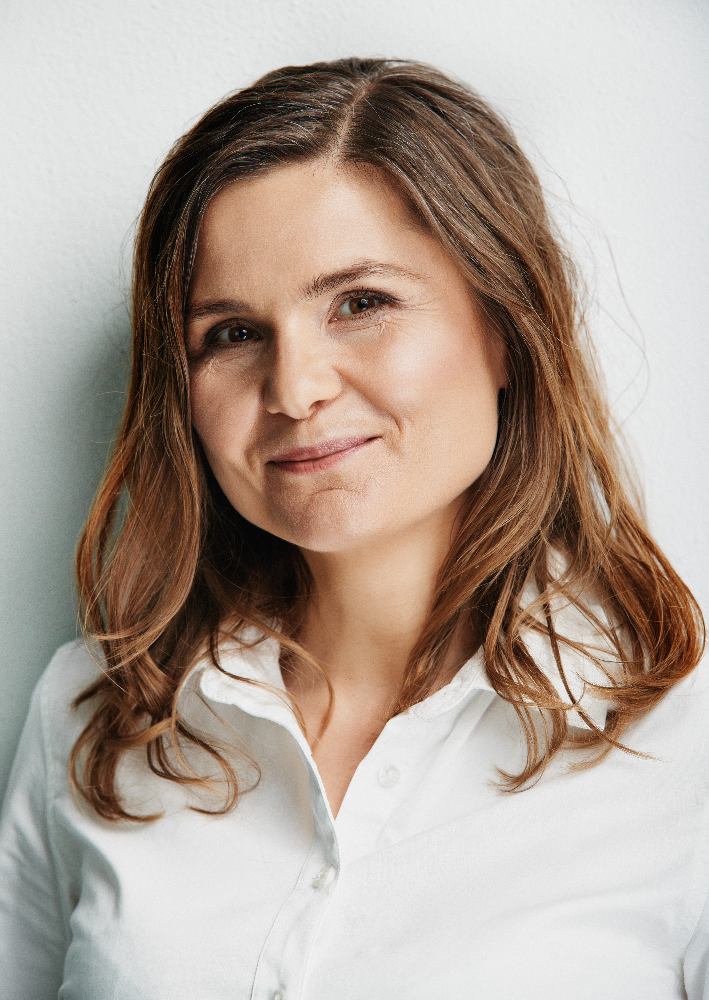

Izabela Miętka

[to jest zdecydowanie za długie] Tradycyjną Medycyną Chińską interesuję się od prawie 10 lat. Rozpoczęłam od zastosowania we własnym życiu zaleceń związanych z odżywianiem oraz ziołami. Potem zaczęłam intensywnie studiować tajniki Tradycyjnej Medycyny Chińskiej, w tym akupunkturę oraz zioła. Ukończyłam 4-letni kurs podstawowy Tradycyjnej Medycyny Chińskiej w Krakowie oraz szereg dodatkowych praktycznych i teoretycznych kursów z tego zakresu, w sumie ponad tysiąc godzin wykładów oraz zajęć praktycznych. Cały czas kontynuuję pasjonujące zgłębianie tajników Tradycyjnej Medycyny Chińskiej.
Dla każdego Pacjenta wybieram indywidualną, dostosowaną do jego potrzeb terapię. Podstawę leczenia stanowi akupunktura, do tego bańki oraz moksa. Stosuję również zioła do gotowania lub parzenia oraz gotowe receptury ziołowe w postaci kulek. Najczęściej daję również wskazówki dotyczące sposobu odżywiania oraz stylu życia, które są ważnym elementem wspierającym terapię. Najczęściej bardzo proste zalecenia dietetyczne, znacznie poprawiają pracę układu trawiennego, a dzięki temu stan ogólny Pacjenta. W swojej praktyce stosuję tradycyjną chińską technikę Gua Sha. Polega ona na skrobaniu pokrytej oliwą powierzchni ciała odpowiednim narzędziem wykonanym z rogu, plastiku lub drewna. W miejscach zastojów często pojawią się zaczerwienienie, przekrwienie lub wybroczyny. Jest to świetna technika pomocna w leczeniu bólu - szczególnie karku, barków, pleców i różnych bólach mięśniowych, a także przy przeziębieniach czy grypie. Zazwyczaj Pacjenci po zabiegu czują ulgę, zrelaksowanie czy lekkość utrzymującą się przez dłuższy czas. Gua Sha może być stosowana również profilaktycznie w celu regularnego usuwania zastojów.
Ważną częścią mojej działalności jest praca z dziećmi. Myślę, że istotne jest wspieranie nowego życia już od momentu poczęcia, a nawet chwilę wcześniej - pracując z przyszłymi mamami oraz kobietami w ciąży. Wszystko, co robimy dla najmłodszych dzieci, a są to najczęściej bardzo proste i podstawowe techniki, procentują na ich stan zdrowia w dorosłym życiu. Ważnym elemetem tej pracy jest dobra współpraca oraz edukacja rodziców w zakresie efektywnego wspierania dzieci w rozwoju i profilaktyce zdrowia. U małych dzieci do 6-7 roku życia stosuję pediatryczny masaż Tuina, który przynosi bardzo dobre efekty w przypadku częstych infekcji, problemów z brzuszkiem, alergii czy nadpobudliwości, a także w profilaktyce zdrowia.
Terapie